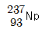
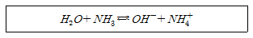
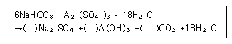
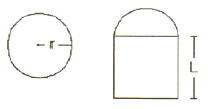

위험물산업기사 (2008-05-11 기출문제)
1과목: 일반화학
1. 다음 물질 중 비점이 약 197℃ 인 무색 액체이고, 약간 단맛이 있으며 함성섬유와 부동액의 원료로 사용하는 것은?
- CH3CHCl2
- CH3COCH3
- (CH3)2CO
- C2H4(OH)2
(정답률: 61%)

2. 원자량 결정의 기준이 되는 원소는?
- 1H
- 12C
- 14N
- 16O
(정답률: 82%)
3. 다음 화합물 중에서 가장 작은 결합각을 가지는 것은?
- BF3
- NH3
- H2
- BeCl2
(정답률: 56%)
4. 어떤 온도에서 물 200g에 최대 설탕이 90g 이 녹는다. 이 온도에서 설탕의 용해도는?
- 45
- 90
- 180
- 290
(정답률: 75%)
5. 황산구리 수용액을 Pt 전극을 써서 전기분해하여 음극에서 63.5g의 구리를 얻고자 한다. 10A의 전류를 약 몇 시간 흐르게 하여야 하는가? (단, 구리의 원자량은 63.5 이다.)
- 2.36
- 5.36
- 8.16
- 9.16
(정답률: 72%)
6. 다음 밑줄 친 원소 중 산화수가 가장 큰 것은?
- NH4+
- NO3-
- MNO4-
- Cr2O72-
(정답률: 68%)
7. 질소와 수소로부터 암모니아를 합성하려고 한다. 표준상태에서 수소 22.4L를 반응시켰을 때 생성되는 NH3의 질량은 약 몇g 인가?
- 11.3
- 17
- 22.6
- 34
(정답률: 43%)
8. 2M Ca(OH)2 용액 200mL를 만들고자 할 때 50% Ca(OH)2용액은 몇 g이 필요한가? (단, Ca의 원자량은 40이다.)
- 29.6
- 59.2
- 79.2
- 148
(정답률: 44%)
9. 다음 중 FeCl3과 반응하면 색깔이 보라색으로 되는 현상을 이용해서 검출하는 것은?
- CH3OH
- C6H5OH
- C6H5NH2
- C6H5CH3
(정답률: 59%)
10.

방사성원소가 β선을 1회 방출한 경우 생성되는 원소는?- Pa
- U
- Th
- Pu
(정답률: 49%)
11. 황산 98g 으로 0.5M의 H2SO4 를 몇 mL 만들 수 있는가?
- 1000
- 2000
- 3000
- 4000
(정답률: 61%)
12. 다음 중 산성염으로만 나열된 것은?
- NaHSO4, Ca(HCO3)2
- Ca(OH)Cl, Cu(OH)Cl
- NaCl. Cu(OH)Cl
- Ca(OH)Cl, CaCl2
(정답률: 69%)
13. 다음 반응식에서 브뢴스테드의 산ㆍ염기 개념으로 볼 때 산에 해당하는 것은?

- NH3 와 NH4+
- NH3 와 OH-
- H2O 와 OH-
- H2O 와 NH4+
(정답률: 72%)
14. 어떤 금속산화물의 원자가는 2이며, 그 산화물의 조성은 금속이 80wt% 이다. 이 금속의 원자량은?
- 32
- 48
- 64
- 80
(정답률: 67%)
15. 0.01N의 HCl 수용액 40mL에 NaOH 수용액으로 중화적정실험을 하였더니 NaOH 20mL가 소모되었다. 이 때 NaOH의 농도는 몇 N 인가?
- 0.01
- 0.1
- 0.02
- 0.2
(정답률: 57%)
16. 다음 중 이성질체로 짝지어진 것은?
- CH3OH 와 CH4
- CH4 와 C2H8
- CH3OCH3 와 CH3CH2OCH2CH3
- C2H5OH 와 CH3OCH3
(정답률: 70%)
17. 공업적으로 에틸렌을 PdCl2 촉매하에 산화시킬 때 주로 생성되는 물질은?
- CH3OCH3
- CH3CHO
- HCOOH
- C3H7OH
(정답률: 64%)
18. 질량수 52 인 크롬의 중성자수와 전자수는 각각 몇 개인가?
- 중성자수 24, 전자수 24
- 중성자수 24, 전자수 52
- 중성자수 28, 전자수 24
- 중성자수 52, 전자수 24
(정답률: 77%)
19. 금속(M) 산화물 3.04g을 환원하여 2.08g의 금속을 얻었다. 원자량이 52라면 이 산화물의 화학식은 어떻게 표시되는가?
- MO
- M2O
- MO2
- M2O3
(정답률: 63%)
20. 불꽃 반응 결과 노란색을 나타내는 미지의 시료를 녹인 용액에 AgNO3 용액을 넣으니 백색침전이 생겼다. 이 시료의 성분은?
- Na2SO4
- CaCl2
- NaCl
- KCl
(정답률: 71%)
2과목: 화재예방과 소화방법
21. 스프링클러설비에 대한 설명 중 옳지 않은 것은?
- 초기 진화작업에 효과가 크다.
- 규정에 의해 설치된 개수의 스프링클러헤드를 동시에 사용할 경우에 각 선단의 방사 압력이 100kPa 이상의 성능이 되도록 하여야 한다.
- 스프링클러헤드는 방호대상물의 각 부분에서 하나의 스프링클러헤드까지의 수평거리가 1.7m 이하가 되도록 설치하여야 한다.
- 습식스프링클러설비는 감지부가 전자장치로 구성되어 있어 동작이 정확하다.
(정답률: 48%)
22. 가연물이 연소될 때 소화를 위한 평균적인 한계산소량은 약 얼마정도 인가?
- 1~ 7vol%
- 11 ~ 15vol%
- 18 ~ 21vol%
- 21 ~25vol%
(정답률: 49%)
23. 물이 일반적인 소화약제로 사용될 수 있는 특징에 대한 설명 중 틀린 것은?
- 증발잠열이 크기 때문에 냉각시키는데 효과적이다.
- 물을 사용한 봉상수 소화기는 A급, B급, 및 C급 화재의 진압에 우수하다.
- 비교적 쉽게 구해서 이용이 가능하다.
- 펌프, 호스 등을 이용하여 이송이 비교적 용이하다.
(정답률: 81%)
24. 이산화탄소 소화기의 장ㆍ단점에 대한 설명으로 옳지 않은 것은?
- 밀폐된 공간에서 사용시 질식으로 인명피해가 발생할 수 있다.
- 전도성이어서 전류가 통하는 장소에서의 사용은 위험하다.
- 기체의 압력으로 방출할 수가 있다.
- 기체이기 때문에 비교적 장소에 구애받지 않고 침투ㆍ확산하여 소화할 수 있다.
(정답률: 84%)
25. 니트로셀룰로오스 위험물의 화재시에 가장 적절한 소화약제는?
- 사염화탄소
- 탄산가스
- 물
- 인산염류
(정답률: 70%)
26. 2층 건물의 위험물제조소에 옥내소화전설비를 설치할 때 한 층에 3개씩의 소화전을 설치한다면 수원의 수량은 몇 m3 이상 이어야 하는가?
- 7.8
- 14.3
- 23.4
- 39
(정답률: 71%)
27. 알코올류 40000 리터에 대한 소화설비의 소요단위는?
- 5 단위
- 10 단위
- 15 단위
- 20 단위
(정답률: 77%)
28. 고체의 일반적인 연소형태에 속하지 않는 것은?
- 표면연소
- 확산연소
- 자기연소
- 증발연소
(정답률: 76%)
29. 소화난이도등급 Ⅱ의 옥내탱크저장소에는 대형수동식 소화기를 몇 개 이상 설치하여야 하는가?
- 1개 이상
- 2개 이상
- 3개 이상
- 4개 이상
(정답률: 39%)
30. 외벽이 내화구조인 위험물저장소 건축물의 연면적이 1500m2 인 경우 소요단위는?
- 6
- 10
- 13
- 14
(정답률: 85%)
31. 고급 알코올황산에스테르염을 주성분으로 한 냄새가 없는 황색의 액체로서 밀폐 또는 준 밀폐 구조물의 화재시 고팽창포로 사용하여 화재를 진압할 수 있는 포소화약제는?
- 단백포소화약제
- 합성계면활성제포소화약제
- 내 알코올포소화약제
- 수성막포소화약제
(정답률: 72%)
32. 다음 위험물의 소화방법으로 주수소화가 적당하지 않은 것은?
- NaClO3
- S
- NaH
- TNT
(정답률: 66%)
33. 제2류 위험물 중 인화성고체의 운반용기 외부에 반드시 표시하여야 할 주의사항으로 옳은 것은?
- 화기엄금
- 충격주의
- 물기엄금
- 화기주의
(정답률: 59%)
34. 팽창질석(삽 1개 포함)은 용량이 몇 L일 때 능력단위가 1.0 이 되는가?
- 160
- 130
- 90
- 60
(정답률: 77%)
35. 다음 ( )안에 알맞은 반응 계수를 차례대로 옳게 나타낸 것은?

- 3, 2, 6
- 3, 6, 2
- 6, 2, 3
- 2, 6, 3
(정답률: 64%)
36. 분말소화기의 분말소화약제 주성분이 아닌 것은?
- NaHCO3
- KHCO3
- NH4H2PO4
- NaOH
(정답률: 76%)
37. 준특정옥외탱크저장소에서 저장 또는 취급하는 액체위험물의 최대수량 범위를 옳게 나타낸 것은?
- 50만L 미만
- 50만L 이상 100만L 미만
- 100만L 이상 200만L 미만
- 200만L 이상
(정답률: 72%)
38. 다음 중 연소속도와 의미가 같은 것은?
- 중화속도
- 환원속도
- 착화속도
- 산화속도
(정답률: 64%)
39. 제6류 위험물에 대한 일반적인 설명으로 틀린 것은?
- 비중이 1보다 크며, 산성을 나타낸다.
- 물에 용해된다.
- 가연성 물질로 산소를 다량 함유한다.
- 건조사나 포소화기가 적응성이 있다.
(정답률: 52%)
40. 황린의 소화활동상 주의사항에 대한 설명으로 틀린 것은?
- 증기의 누출에 주의하고 재발화하지 않도록 하여야 한다.
- 주수소화시 비산하여 연소가 확대될 위험이 있으므로 주의한다.
- 유독가스사 발생하므로 보호장구 및 공기호흡기를 착용하는 것이 안전하다.
- 연소시 유독한 오황화린을 발생시키므로 주의하여야 한다.
(정답률: 39%)
3과목: 위험물의 성질과 취급
41. 위험물 제조소등의 안전거리의 단축기준과 관련해서 H≤pD2+a 인 경우 방화상 유효한 담의 높이는 2m 이상으로 한다. 다음 중 H 에 해당되는 것은?
- 인근 건축물의 높이(m)
- 제조소 등의 외벽의 높이(m)
- 제조소 등과 공작물과의 거리(m)
- 제조소 등과 방화상 유효한 단과의 거리(m)
(정답률: 41%)
42. 황린의 성질에 대한 설명으로 옳은 것은?
- 발화점이 260℃ 이상이다.
- 독성이 거의 없는 물질이다.
- 물에 잘 용해되고 활발하게 반응한다.
- 공기 중 산화되어 P2O5가 생성된다.
(정답률: 67%)
43. 동식물유는 요오드값에 따라 건성유, 반건성유, 불건성유로 분류한다. 일반적으로 건성유의 요오드값 기준은 얼마인가?
- 100 이하
- 100 ~ 130
- 130 이상
- 200 이상
(정답률: 79%)
44. 제6류 위험물의 위험성 및 성질에 관한 설명 중 옳은 것은?
- 산화성 무기화합물이다.
- 가연성 액체이다.
- 제2류 위험물과 혼재가 가능하다.
- 과산화수소를 제외하고는 염기성 물질이다.
(정답률: 60%)
45. 제1류 위험물 중 알칼리금속의 과산화물 운반 용기에 반드시 표시하여야 할 주의사항을 모두 옳게 나열한 것은?
- 화기ㆍ충격주의, 물기엄금, 가연물접촉주의
- 화기ㆍ충격주의, 화기엄금
- 화기엄금, 물기엄금
- 화기ㆍ충격엄금, 가연물접촉주의
(정답률: 79%)
46. 피뢰침은 지정수량 몇 배 이상의 위험물을 취급하는 제조소에 설치하여야 하는가? (단, 제6류 위험물을 취급하는 위험물제조소는 제외한다.)
- 10배
- 20배
- 100배
- 200배
(정답률: 70%)
47. [그림]과 같은 위험물을 저장하는 탱크의 내용적은 약 몇 m3인가? (단, r은 10m, L은 15m이다.)

- 3612
- 4712
- 5812
- 6912
(정답률: 69%)
48. 다음 중 물속에 저장하는 위험물은?
- 에테르
- 이황화탄소
- 아세톤
- 가솔린
(정답률: 81%)
49. 지정수량 이상의 위험물을 차량으로 운반하는 경우 당해 차량에 표지를 설치하여야 한다. 다음 중 표지의 규격으로 옳은 것은?
- 장변길이 : 0.6m 이상, 단변길이 : 0.3 이상
- 장변길이 : 0.4m 이상, 단변길이 : 0.3 이상
- 가로, 세로 모두 0.3m 이상
- 가로, 세로 모두 0.4m 이상
(정답률: 78%)
50. 위험물 지하탱크저장소의 탱크전용실 설치기준으로 틀린 것은?
- 콘크리트 구조의 벽은 두께 0.3m 이상으로 한다.
- 지하저장탱크와 탱크전용실의 안쪽과의 사이는 50cm 이상의 간격을 유지한다.
- 콘크리트 구조의 바닥은 두께 0.3m 이상으로 한다.
- 벽, 바닥 등에 적당한 방수 조치를 강구한다.
(정답률: 67%)
51. 다음 물질 중 인화점이 가장 낮은 것은?
- CS2
- C2H5OC2H5
- CH3COCl
- CH3OH
(정답률: 55%)
52. 다음 중 탄화알루미늄이 물과 반응할 때 생성되는 가스는?
- H2
- CH4
- O2
- C2H2
(정답률: 48%)
53. 다음 물질 중 물과 접촉되었을 때 위험성이 가장 작은 것은?
- CaC2
- KClO4
- Na
- Ca
(정답률: 65%)
54. 다음 중 위험등급 Ⅰ의 위험물이 아닌 것은?
- 염소산염류
- 황화린
- 알킬리튬
- 과산화수소
(정답률: 54%)
55. 다음 중 독성이 있고, 제2석유류에 속하는 것은?
- CH3CHO
- C6H6
- C6H5CH = CH2
- C6H5NH2
(정답률: 45%)
56. 다음 중 물과 반응하여 수소를 발생하지 않는 물질은?
- 칼륨
- 수소화분소나트륨
- 탄화칼슘
- 수소화칼슘
(정답률: 70%)
57. 에틸알코올의 인화점은 약 몇 ℃ 인가?
- -4℃
- 7℃
- 13℃
- 19℃
(정답률: 59%)
58. 가솔린의 성질 및 취급에 관한 설명 중 틀린 것은?
- 용기로부터 새어나오는 것을 방지해야 한다.
- 가솔린 증기는 공기보다 무겁다.
- 소화방법으로 포에 의한 소화가 가능하다.
- 발화점이 10℃ 정도로 낮아 상온에서도 매우 위험하다.
(정답률: 50%)
59. 다음 물질을 적셔서 얻은 헝겊을 대량으로 쌓아 두었을 경우 자연발화의 위험성이 가장 큰 것은?
- 아마인유
- 땅콩기름
- 야자유
- 올리브유
(정답률: 81%)
60. 다음 중 물보다 가벼운 것으로만 나열된 것은?
- 아크릴산, 과산화벤조일
- 아세트산, 질산메틸
- 벤젠, 가솔린
- 니트로글리세린, 경우
(정답률: 53%)